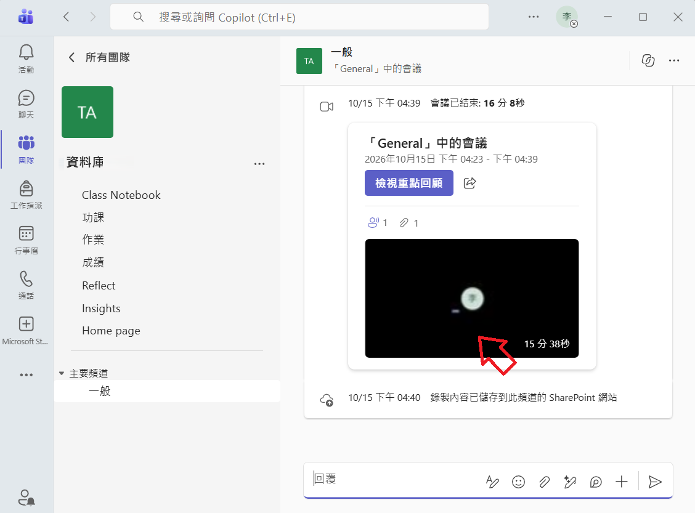
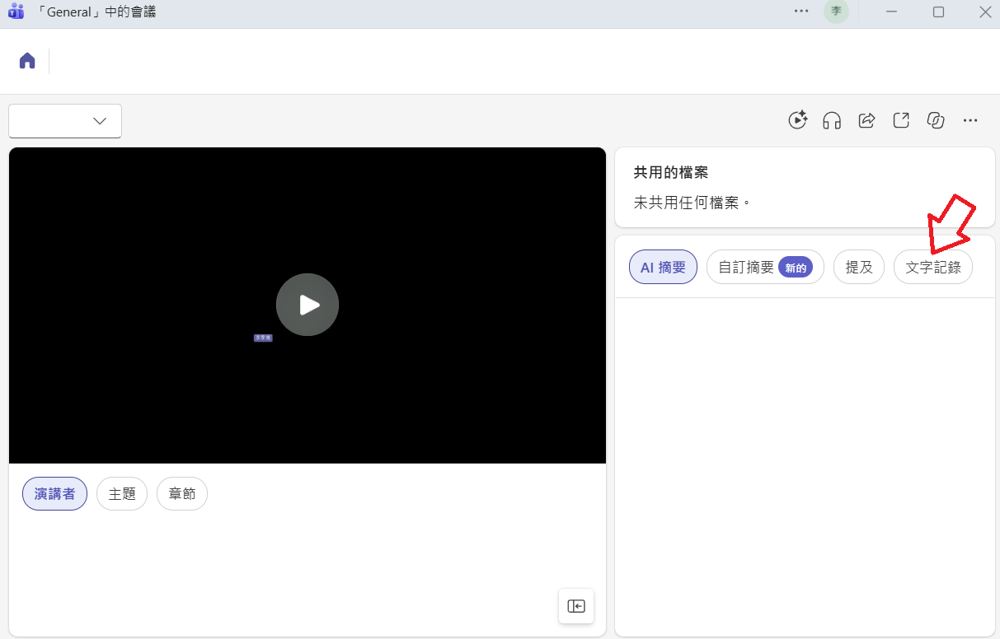
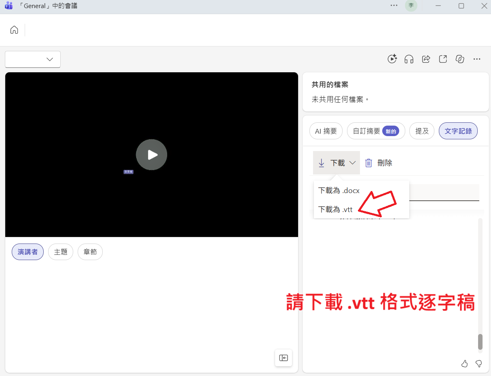

1
開啟 Teams 行事曆，點選「立即開會」
在 Teams 左側工具列點選「行事曆」，再於右上角點選「立即開會」，進入會議畫面。

MEETINGTUTOR｜行政人員操作說明
.vtt 逐字稿依照下方截圖操作，即可取得可交由 MeetingTutor 整理的逐字稿檔案。
MeetingTutor 能將會議或課程的逐字稿交由 AI 進一步整理：先修飾轉錄中可能不完整、不通順的詞語與句子，再搭配與會者姓名、專有名詞、會議通知、會議資料或講義等補充資料，讓內容更容易閱讀與核對；接著也能自動撰寫會議／上課摘要。請先使用會議錄製軟體（例如 Microsoft Teams）錄下會議並產出逐字稿，再將逐字稿交給本系統處理。
您也可以在系統中自訂範本與提示詞，事先寫好希望 AI 如何整理，例如：盡量保留逐字內容、從逐字稿判斷工作項目與爭議項目，或依照指定格式撰寫會議紀錄通知信。只要把整理方向說清楚，就能交由 AI 協助完成。
.vtt。以下 4 張截圖依序說明：開啟即時會議、開始錄製／謄寫、選擇語言，以及確認功能已啟用。
在 Teams 左側工具列點選「行事曆」，再於右上角點選「立即開會」，進入會議畫面。
進入會議後，點選右上角「其他（…）」→「錄製及轉錄」→「開始錄製」。若只需要逐字稿、不需要錄音錄影，也可以選擇「開始謄寫」。

依畫面提示選擇正確的口語語言，例如「繁體中文（台灣）」或英文，再按「確認」。語言選擇正確，後續逐字稿辨識會比較準確。

再次開啟「其他」→「錄製及轉錄」。如果選單中已顯示「停止錄製」與「停止謄寫」，代表錄製與逐字稿功能已經開始；會議結束後再依單位規定停止或離開會議。

.vtt 逐字稿會議結束、檔案完成處理後，依下列 3 張截圖找到會議回顧頁與文字記錄，再下載適合系統處理的 .vtt 格式。
在 Teams 的團隊／頻道或會議紀錄中，找到該場會議，點開會議影片、錄音與謄寫紀錄的回顧頁。

開啟會議回顧頁後，在右側分頁列點選「文字記錄」，切換到逐字稿內容。

在「文字記錄」頁面按「下載」，再選擇「下載為 .vtt」。請優先使用 .vtt 檔案交給 MeetingTutor，方便系統保留時間軸並進行後續處理。

將剛下載的 .vtt 逐字稿上傳至 MeetingTutor，再依需要補充資料與整理方向：